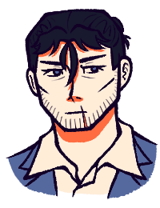
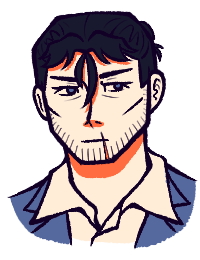

CHARACTERS
The Vorobyevs
 

Gavrill Vorobyev, Agent HROTHGAR
An overprotective father and a lifelong soldier. Fled from Ingushetia's conflicts to Canada with his family. Was wrongly imprisoned for 10 years until Helvetia recruited him as a field agent. He is nothing without his children.
| DOB: | 25 August 1975, 42 y/o in 2017 |
| Height: | 179cm (5'10.5") |
| Home: | Winnipeg, Canada (Ingush-Candian) — Nazran, Russia (1992-2005) — Prigorodny District, Russia(1975-1992) |
| Languages: | Ingush, Russian, English |
| First appearance: | New Year's Wishes |
Hrodwyn Vorobyev
The eldest child. Skilled mixed martial artist. Bird enthusiast. Was their siblings' guardian as soon as they turned 18. Too financially worried to go to college. Concerningly private and inexpressive. Intersex; any pronouns.
| DOB: | 6 September 1997, 20 y/o in 2017 |
| Height: | 165cm (5'5") |
| Home: | Winnipeg, Canada (Ingush-Candian) — Ingushetia, Russia (1997-2005) |
| Languages: | Ingush, English, Canadian-French, basic Japanese |
| First appearance: | New Year's Wishes |

Merethel Vorobyev
The middle brother. A diligent and brilliant student. Moody but witty. Wants to be a doctor. Loves his girlfriend Steora Rochefort. Gets frustrated over the many feelings he has for his father that he doesn't understand.
| DOB: | 7 November 2000, 17 y/o in 2017 |
| Height: | 172cm (5'7.7") |
| Home: | Winnipeg, Canada (Ingush-Candian) — Ingushetia, Russia (2000-2005) |
| Languages: | Ingush, English, basic Canadian-French |
| First appearance: | New Year's Wishes |

Hygd Vorobyev
The youngest sister. A bright ball of joy. Imaginative and bold. Aspiring artist. Dedicated Guardians of Ga’Hoole and Animal Jam fan. Is a lot less naive and a lot more mature than she lets on. All she wants is a family.
| DOB: | 12 July 2004, 13 y/o in 2017 |
| Height: | 156cm (5'1.4") |
| Home: | Winnipeg, Canada (Ingush-Candian) — Ingushetia, Russia (2004-2005) |
| Languages: | Ingush, English, basic Canadian-French |
| First appearance: | New Year's Wishes |
Merlin
Gavrill's guiding light. The memories of someone who once was.
| DOB: | 1 January 2006, 11 y/o in 2017 |
| Height: | Sparrow-sized |
| Home: | The past |
| Languages: | Ingush, Russian |
| First appearance: | Here Now |
Friends of the Sparrows
More characters to be added!
Helvetia Ltd.

Tatsuhiro, Agent TATSU
A soft-spoken private investigator recruited to internally assess Helvetia. Played and written by Mint. Designed by myself.
| DOB: | 5 May 1963, 54 y/o in 2017 |
| Height: | 189cm (6'2.4") |
| Home: | Osaka, Japan (Irish-Japanese mix) |
| Languages: | Japanese, English, JSL |
| First appearance: | Let's Talk, Father-to-Father |
Agent MELYDICE
One of Helvetia's most ruthless agents. Vehemently hates the Unnatural. Played, written, and designed by Katastrofish.
| DOB: | 4 May 1986, 31 y/o in 2017 |
| Height: | 165cm (5'5) |
| Home: | San Antonio, USA (Chinese-American) |
| Languages: | English, Mandarin Chinese, Spanish |
| First appearance: | Let's Talk, Father-to-Father |
Agent AMAIA
The demolitions expert. A shut-in recluse who adores her mother and sister. Played, written, and designed by Ayako.
| DOB: | 19 June 2017, 33 y/o in 2017 |
| Height: | 162cm (5'3.8") |
| Home: | Cartagena, Colombia |
| Languages: | Spanish, English |
| First appearance: | Let's Talk, Father-to-Father |
Agent YONA
A paramedic and hobbyist journalist. Her little sister's coma led her to Helvetia. Played, written, and designed by Inky.
| DOB: | 8 July 1985, 32 y/o in 2017 |
| Height: | 160cm (5'3") |
| Home: | Tokyo, Japan |
| Languages: | Japanese, English |
| First appearance: | Let's Talk, Father-to-Father |
Unless said otherwise, the below NPCs were ideated by our first game master but are played, written, and further developed by Mint, and are designed by myself.
Fisher Mamilov, Agent VELUS
The computer specialist. Recruited out of high school for his prodigious intelligence. Developed by Mint and myself. Designed by Kestrelia.
| DOB: | 4 June 1981, 36 y/o in 2017 |
| Height: | 172cm (5'7.7") |
| Home: | ?, France (Ingush-Ethiopian mix) — Magas, Russia (2004-2005) |
| Languages: | Ingush, Russian, English, French |
| First appearance: | Let's Talk, Father-to-Father |